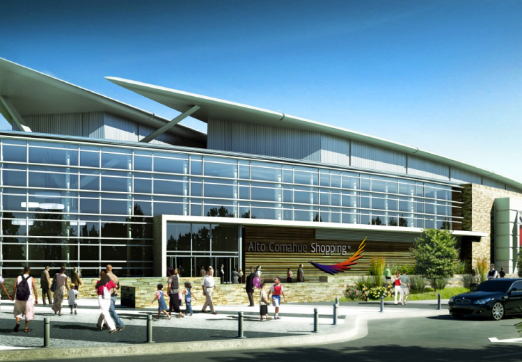
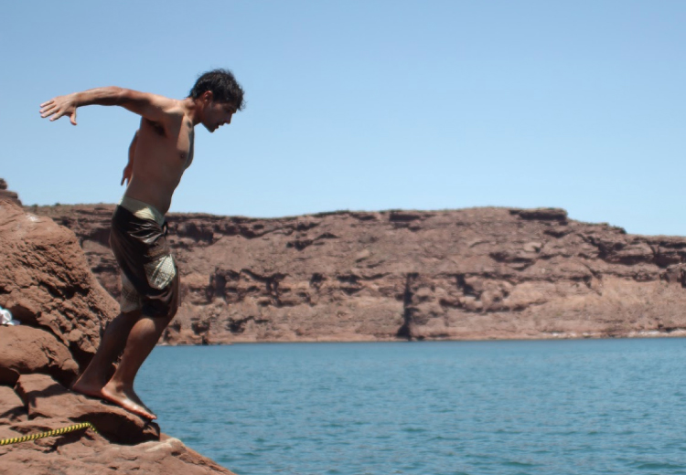

“Viajamos miles de kilómetros para encontrarnos y comenzar un nuevo viaje juntos, hoy les toca viajar a todos ustedes para acompañarnos en un día muy especial, el de nuestro casamiento”.
Victoria
Cristian
Invitación
Cómo llegar
- Ceremonia
- Fiesta
- Hospedaje
- Transporte
Ceremonia 11:30 AM
Lugar
Descripción, detalles
-38.6213045, -68.3123759
Fiesta 5:30 PM
Bodega Saurus
El Chañar, Neuquén.
-38.6213045, -68.3123759
Dónde nos casamos?
Los esperamos en Saurus, Bodegas Schroeder en el Chañar a 40 km de Neuquén; la región vitivinícola de la provincia. Elegimos esta increíble bodega porque es uno de nuestros lugares favoritos en el valle Patagónico. El silencio, la simplicidad y la combinación de los sabores, el aire y el terruño nos transportan fuera de la ciudad y nos recuerdan los lindos momentos que pasamos juntos en aquellos primeros viajes de novios. Saurus fue el lugar que elegimos para pasar nuestra primera cita en Neuquén, de Saurus fue el primer y único espumante dulce que nos gusta; y en el genial restaurante de Saurus, donde se elogian comidas, ciclos de música y cine, el 6 de diciembre vamos a dar el Sí.
VISITÁ EL SITIO

Dónde Hospedarse?
Neuquén y Cipolletti son dos ciudades pegadas que hay crecido mucho pero la oferta hotelera no fue a la par. Por eso les recomendamos tres hoteles dónde quedarse. Pueden buscar en internet más opciones y departamentos temporarios.
HOTEL DEL COMAHUE EN NEUQUÉN:
Es de los más caros, tiene pileta, gym, está en pleno centro cerca de todo y se come rico.
SITIO WEB DEL HOTEL
HOTEL NANDO EN CIPOLLETTI:
También tiene una pequeña piscina, gym y la comida es buena, pero la contra es que está en Cipo. Para los que vienen de afuera hay más cosas para hacer, e inclusive propuestas gastronómicas en Neuquén. SITIO WEB DEL HOTEL
HOTEL NEUQUÉN TOWER:
Está en pleno centro y es de muy buena categoría, super cómodo.
Neu 354. Queda sobre calle Rivadavia a tres del centro, está en una zona movida, pero a pie de los principales puntos de interés.
SITIO WEB DEL HOTEL
HOTEL AMUCAN NEUQUÉN:
Este hotel es de un conocido nuestro, queda a 4 cuadras del centro de Neuquén. El desayuno es super generoso, y el resaurante, si bien no está ambientado super lindo, tiene muy rica comida a precios accesibles. Sin lugar a dudas es el más accesible de todos, considerando que durante el día en el hotel no van a estar demasiado tiempo.
SITIO WEB DEL HOTEL
Qué me pongo?
Diciembre suele ser un mes caluroso, estamos entrando en el verano y hay muchas horas de sol. Amanece alrededor de las 6.45 y oscurece por completo 9.30. La temperatura varía entre una máxima de 30 y una mínima de 14. Recuerden que hay amplitudes térmicas importantes entre el día y la noche, siendo siempre las horas más calurosas entre las 15 y las 18 horas. La media es de 23. Traigan ropa de verano y algún saquito nocturno. No olviden ojotas y zapatillas.
CÓDIGO DE FIESTA:
Mujeres de Corto solera, formal. Prohibido vestir de blanco. Traigan zapatos cómodos, es una bodega, pueden salir a caminar. Hombres, elegante sport, definición: camisa y saco, no se aceptan jeans ni zapatillas, el que quiere más puede, pero no me opaquen al novio.
Qué visitar en la zona?
Si venís a nuestro casamiento, no dejes de perderte estos lugares increíbles que Neuquén y Rio Negro tienen para ofrecer en el verano. Ante todo trae traje de baño.
Paso Córdova:
Distancia, a 40 km de Cipolleti y 45 desde Neuquén. ¿Qué hacer? Chapotear en el rio, explorar la barda, hacer trekking,bici, comer rico rico en la Pulpería local y visitar el Valle de la luna Rojo. ¿Qué llevar? Picnic, mate, sombrilla, malla, protector solar. "Ubicada en el Departamento General Roca sobre la margen del Río Negro, a unos 12 kilómetros hacia el suroeste de la ciudad de General Roca. Posee muy valiosos recursos culturales en sus yacimientos fósiles que se ubican sobre las bardas del Río Negro, donde se encontraron restos de variada fauna terrestre y marina. También en la zona conocida como Valle de la Luna pueden aún encontrarse vestigios de madera petrificada y caracoles marinos que ponen en clara evidencia la historia geológica del lugar que nos habla de la incursión marina que sufrió la patagonia."
Costanera del Limay, Neuquén capital:
¿Qué hacer? Nadar, hacer picnic, comer facturas, caminar, tomar sol, leer a la orilla del río y deleitarse con el paisaje. ¿Dónde? Calle Olascoaga al fondo. Esta cale es la continuación de la Avenida Argentina, la del centro, sólo toman dirección al río, cruzando Ruta 22 y llegan, van a ver muchas casas lindas, clubes, y un paseo costero digno de disfrutar. Abrieron un resto con cosas ricas en frente del río y siempre venden facturas y churros, por si las moscas. ¿Qué llevar? Lona, protector solar, traje de baño, mate y lo que quieran...
Parque Norte:
¿Qué hacer? Caminar, correr, entrenar. ¿Dónde? Avenida Argentina hacia arriba, es donde termina la calle, la ciudad los lleva pues esta avenida es la calle principal de Neuquén, deben ir en dirección opuesta a la ruta 22, queda 10 cuadras del centro. Consiste en un conjunto de senderos en altura y bosque de hasta 15 km, hay para todos los niveles, los que quieren trepar pueden, los que van en llano también.
Shopping Alto Comahue:
¿Te olvidaste de algo? Podés darte una vuelta por el shopping, es chiquito pero honesto. ¿Dónde? En el centro, Leloir, casi Avenida Argentina, muy cerquita de los senderos de la barda.El shopping cuenta además con un supermercado COTO, si necesitan algo para no tener que ir al Jumbo emplazado en la ruta 22. Hay estacionamiento.
Los lagos circundantes:
Chocón, Marimenuco, Pellegrini. Acá, como siempre hay para todos los gustos y distancias. El Chocón es el que queda más lejos, pero tiene mejor calidad de infraestructura, desde picnics organizados a playas públicas y lo que quieran, vale la pena conocer esta maravilla. El agua es fría pero, en las playas de menor profundidad como "Chocón Medio" (tiene parador es un proyecto de country busquen en la web) y Sarapura (camping) se re pueden meter. Está a 81 km de Neuquén y suele haber tráfico. Marimenuco, super hermoso, se puede nadar, pescar, lo que gusten... consulten antes de ir así explicamos ruta, queda a 60 km de Neuquén. Finalmente el que está más cerquita, el Pellegrini, villa del lago, tiene infraestructura y hasta estacionamiento, queda a tan sólo 30 km de Neuquén, pero ni por asomo es tan lindo como los otros dos.
Caviahue-Copahue
Montaña, volcán, trekking y termas. ¿Dónde? 350 km de Neuquén. Es para los que tienen ganas de ver la cordillera en su plenitud. Es una muy buena época para ir porque están abiertas las termas de Copahue, que son verdaderamente fantásticas y no excesivamente caras. Para los más entusiastas es posible ir y venir en el día, si no, recomendamos se queden una noche; el paisaje y la ruta desde las Lajas hasta la cordillera lo valen.
Regalo
-
Querés ayudarnos
con nuestra luna de miel?